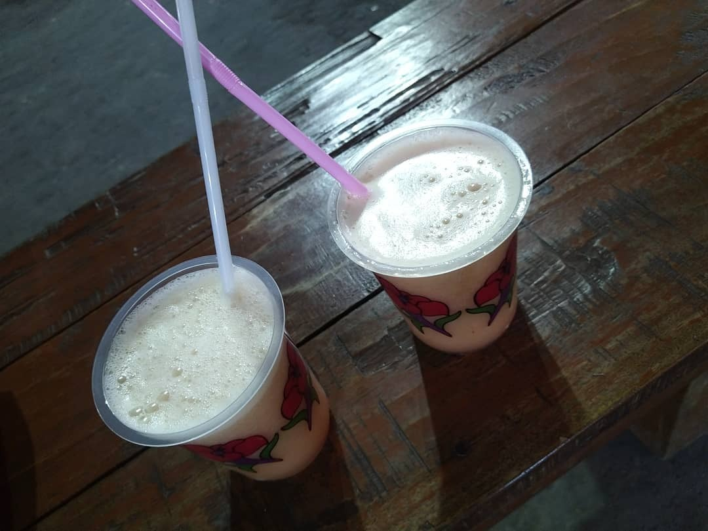

വേനലല്ലേ വെയിലല്ലേ ചൂടല്ലേ.. അപ്പൊ പിന്നെ അൽപ്പം തണുപ്പിച്ചേക്കാം എന്നുകരുതി ഒരു ബോട്ടിൽ Appy Fizz ഉം വാങ്ങി വീട്ടിൽ വന്നപ്പോ അച്ഛന്റെ ബ്ലോക്ക്…
വിഷമാണത്രേ! പിന്നെ കൊക്കക്കോളക്ക് കിട്ടേണ്ട കുത്തുവാക്കുകളും സാരോപദേശവും ഒക്കെ എന്റെ പാവം ഫിസ്സിന്റെ കുപ്പിയിൽ.
ഒടുക്കം എന്നെയും കുപ്പിയെയും ഉപദേശിച്ച് വായിലെ വെള്ളം വറ്റിയപ്പോ തൊണ്ട നനയ്ക്കാൻ അതീന്നു തന്നെ ഒരു വല്ല്യ സിപ്പും. ശ്ശെടാ!
എങ്കിലും പരിഹാരമായി പിറ്റേന്ന് ഒരുകിലോ ചെറുനാരങ്ങയാണ് അടുക്കളയിലെത്തിയത്.
നല്ല നാടൻ നാരങ്ങയുടെ മുന്നിൽ ഫേവറേറ്റ് ഡ്രിങ്കിന്റെ മഹത്വത്തിന് എന്തു പ്രാധാന്യം.
എന്നാ പിന്നെ അതീന്നു രണ്ടെണ്ണം എടുത്ത് ഫ്രഷ് ലെമൺ ജ്യൂസ് ആക്കിയേക്കാം എന്നു മനസ്സിൽ വിചാരിച്ചപ്പോ പിന്നാലെ അമ്മയുടെ ബ്ലോക്ക്…
നാരങ്ങാ വെള്ളം ഉപ്പിട്ടു കുടിക്കുന്നതാ ആരോഗ്യത്തിന് നല്ലതത്രേ! പോരാത്തതിന് പഞ്ചസാരയ്ക്ക് ഒക്കെ ഇപ്പൊ എന്താ വില എന്നും.
പറഞ്ഞപോലെ പഞ്ചസാരയ്ക്ക് ഇപ്പൊ എന്താ വില? ആവോ. വില എന്തായാലും ആ കാര്യത്തിൽ ഒരു തീരുമാനം ആയി.
ഉപ്പിട്ടു കുടിക്കാൻ ആണെങ്കിൽ വല്ല കഞ്ഞിവെള്ളവും കുടിച്ചാ പോരേ എന്നു പറഞ്ഞ് എല്ലാരും കാൺകെ ആ രണ്ടു സുന്ദരൻ മഞ്ഞ നാരങ്ങകളും അതിനു മീതെ ഒരുപിടി പുച്ഛവും വാരിവിതറി വീടിന്റെ പടിയിറങ്ങി.
(ഒന്നുരണ്ടു മണിക്കൂർ കഴിഞ്ഞു തിരിച്ചു കയറാനുള്ള പടികൾ ആയതിനാൽ ‘സബറോം കീ സിന്ദഗി’ ഡയലോഗ് പറയാൻ സാധിച്ചില്ല, ക്ഷമിക്കുക)
കുറേ കഴിഞ്ഞ് വെയിലത്തുവാടി ദാഹിച്ചു തളർന്ന് അതേ പടികൾ തിരിച്ചു കയറി മുന്നേ വലിച്ചെറിഞ്ഞ ആ രണ്ടു സുന്ദരൻ ചെറുനാരങ്ങകളെ തപ്പിപ്പിടിച്ചെടുത്ത്, ഒരു കാര്യോം ഇല്ലാതെ അതിന്റെ മീതെ വാരി വിതറിയ പുച്ഛവും തുടച്ചുകളഞ്ഞ്, ഉപ്പിൻപാത്രം നോക്കുമ്പോളാണ് തൊട്ടപ്പുറത്തെ ചില്ലുഗ്ലാസ്സിൽ പറ്റിപ്പിടിച്ചിരിക്കുന്ന നാരങ്ങാക്കുരുക്കളെയും അലിയാത്ത പഞ്ചസാരത്തരികളെയും ഒരുമിച്ചു കാണുന്നത്.
ചതി !!!
അമ്മേ… (ദേഷ്യം, ജിജ്ഞാസ)
എനിക്ക് അറിയണം. എനിക്ക് ഇപ്പൊ അറിയണം.
എന്നോട് ഉപ്പിട്ടു കുടിക്കാൻ പറഞ്ഞിട്ട് പഞ്ചസാരയിട്ടു കലക്കി ഇവിടെ നാരങ്ങാവെള്ളം കുടിച്ചതാരാണെന്ന് എനിക്കിപ്പോ അറിയണം!
ഒന്നാം പ്രതി ടീവിക്ക് മുന്നിൽ ഇരുന്നു പല്ലിളിക്കുന്നു.. (പാര, പെങ്ങൾ എന്നോക്കെ സന്ദർഭോചിതമായി പേരിട്ടു വിളിക്കാം)
“ഞാൻ ഒരു ഗ്ലാസ്സേ കലക്കിയുള്ളു. ചേട്ടൻ ഇവിടെ ഇല്ലാർന്നു, അതാ!”
ഓഹോ. ഞാനിവിടെ ഇല്ലേൽ നീ ഒരു ഗ്ലാസ്സേ കലക്കൂള്ളൂ അല്ലേ? കാണിച്ചു തരാം (പ്രതികാരദാഹം)
പിറ്റേന്ന് പ്രഭാതം പൊട്ടി വിടർന്നു. പതിവുപോലെ സൂര്യൻ ഉച്ചക്ക് ഉച്ചിക്കുവന്നു പൊള്ളിക്കാനും തുടങ്ങി.
അവളാണേൽ അടുത്തു തന്നെയുള്ള ഒരു കൂട്ടുകാരിയുടെ വീട്ടിലും പോയിരിക്കുവാണ്.
ഇതാണ് പറ്റിയ അവസരം…
മൂന്നു നാരങ്ങ. നാലുഗ്ലാസ്സ് വെള്ളം. ആവശ്യത്തിന് ഇഞ്ചി, പച്ചമുളക്, വേപ്പില. അപ്പാടെ കമഴ്ത്തിയ പഞ്ചസാരക്കിണ്ണം.
* നാരങ്ങാ വെള്ളം ഉണ്ടാക്കാനുള്ള റെസിപ്പി ആണ്. പ്രതികാരം ചെയ്യാൻ ആവുമ്പോ പഞ്ചസാര (അമ്മകാണാതെ) അല്പം കൂടുതലും ആവാം!
സമയം കടന്നുപോയി.. ചോറൊക്കെ ഉണ്ട് ഒരുഗ്രൻ ഉച്ചമയക്കം ഒക്കെ കഴിഞ്ഞ് കണ്ണും തിരുമ്മി ഇത് ഏതാ മാസം എന്നും പറഞ്ഞ് (ഉറക്കപ്പിച്ച്) എണീറ്റ് ഇരിക്കുമ്പോളാണ് ഒന്നാം പ്രതി പ്രിയസോദരിയുടെ രംഗപ്രവേശം.
ഞാനാണേൽ അപ്പോളേക്കും പ്രതികാരത്തിന്റെ കാര്യം ഒക്കെ അങ്ങു മറന്നും പോയി.
"ചേട്ടന് നാരങ്ങാ വെള്ളം വേണോ?"
ആ. വേണം.
കഷ്ടിച്ച് അര ഗ്ലാസ്സ്. തന്നപ്പോ എന്നെ ആക്കി ഒരു ചിരിയും.
പതിവില്ലാതെ എന്താണ് ഒരു സ്നേഹം എന്നോർത്ത് ഒറ്റ വലിക്ക് അത് കുടിച്ചു തീർത്തു.
നാരങ്ങാ വെള്ളത്തിലെ സിട്രിക്ക് ആസിഡ് തലച്ചോറിനെ മെല്ലെ തല്ലിയുണർത്തിയപ്പോളാണ് എനിക്ക് റിലേ വന്നതും, ഒപ്പം മൂന്നു കാര്യങ്ങൾ വ്യക്തമായതും...
1. ഈ അടുത്തു കുടിച്ചതിൽ വെച്ച് ഏറ്റവും സ്വാദുള്ള നാരങ്ങാവെള്ളം ആയിരുന്നു അത്.
2. അത് ഉണ്ടാക്കിയത് ഞാൻ തന്നെ ആയിരുന്നു.
3. ഞാൻ കുടിച്ച മുക്കാൽ ഗ്ലാസ്സിന്റെ ബാക്കി മൂന്നര ഗ്ലാസ്സ് പുന്നാര പെങ്ങൾ നേരത്തെ തന്നെ അകത്താക്കിയിരുന്നു!
ശുഭം! (ഇപ്പൊ മുട്ടൻ അടി നടക്കുവാണ്, പിന്നെ കാണാം. ബൈ)
-DeOn-